Chart & mobile interface review
Actual local production-build captures. Services and market values in screenshots are test fixtures. These are not current investment recommendations or proof of live execution. Review covers decision order, chart controls, clear dates, technical spacing and the mobile glass dock. Physical iPhone Safari remains unverified.
Verification report · Previous review & approved mockup boards
Light · mobile menu
Mobile Menu · 390px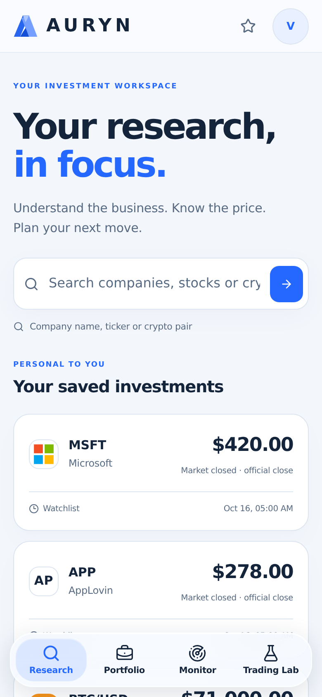
Account Menu · 390px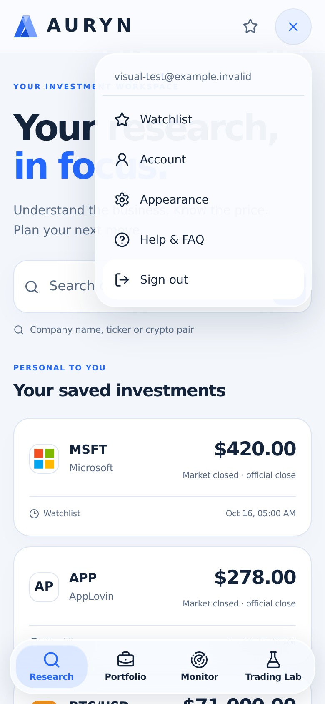
Light · research at 390px
Overview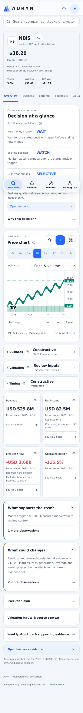
Technicals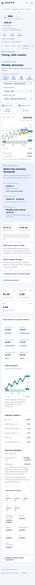
Light · research at 1440px
Overview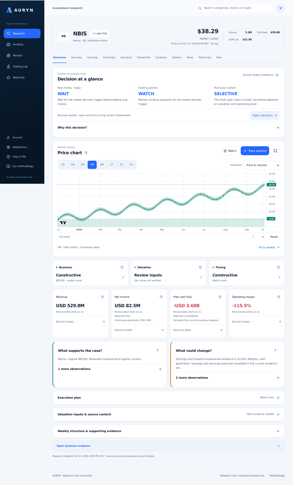
Technicals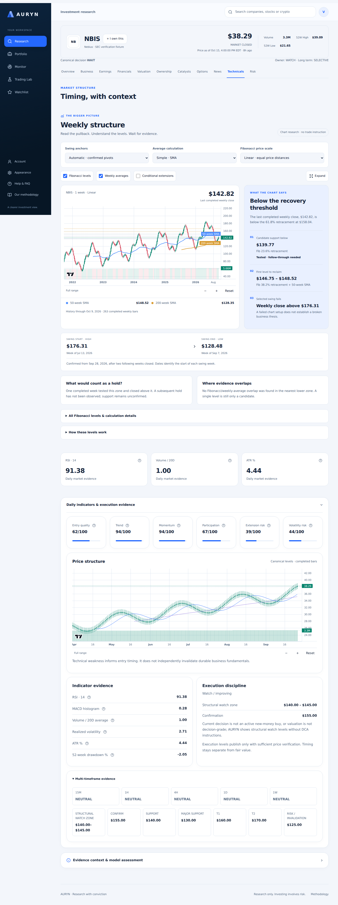
Dark · mobile menu
Mobile Menu · 390px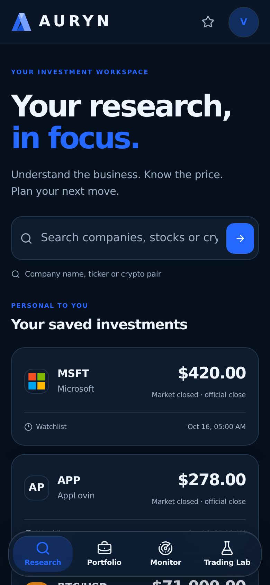
Account Menu · 390px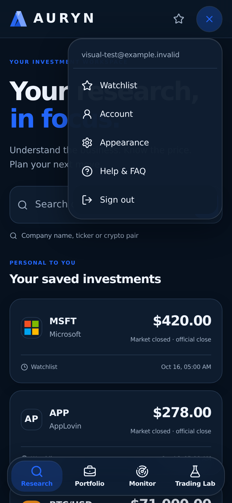
Dark · research at 390px
Overview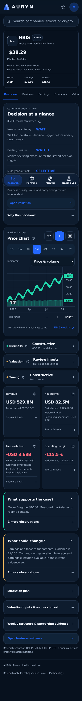
Technicals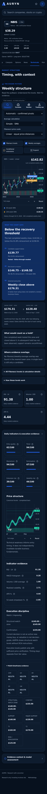
Dark · research at 1440px
Overview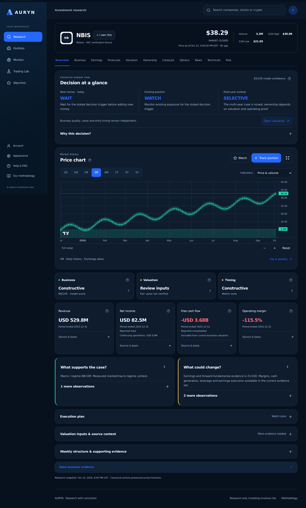
Technicals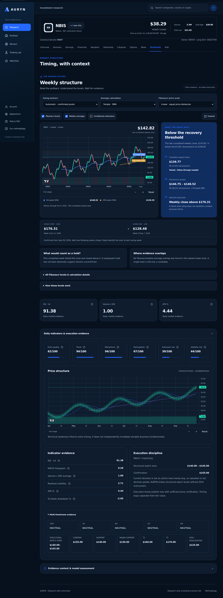